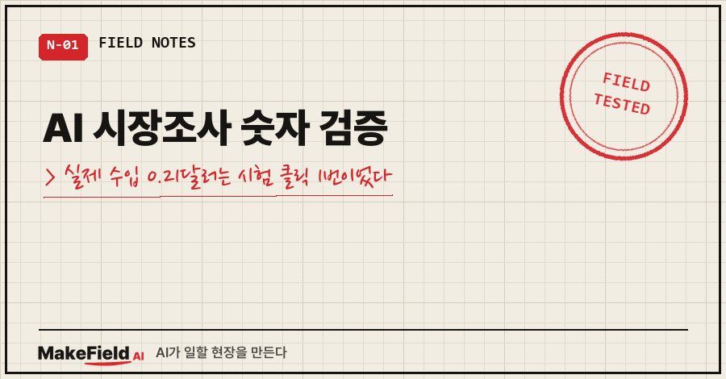
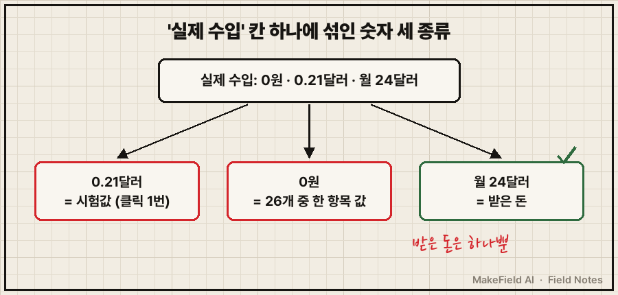
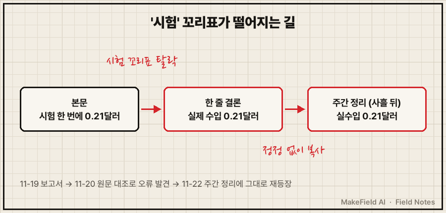
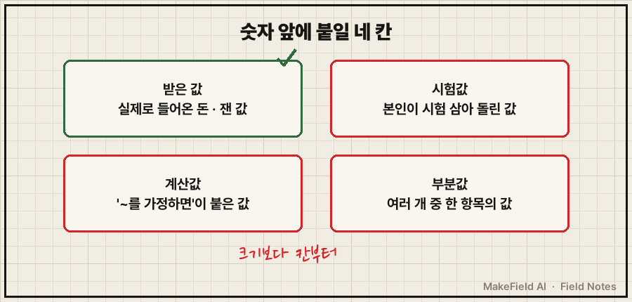

0원, 0.21달러, 월 24달러.
AI 시장조사 보고서가 판매자 세 명의 "실제 수입"이라며 적어 온 숫자예요.
소수점 둘째 자리까지 있으니 믿음이 가더라고요. 결론은 "보류".
그런데 원문을 다시 열어 보니 셋 중 진짜 받은 돈은 월 24달러 하나였어요.
한 줄로 줄이면, AI 시장조사 보고서의 숫자는 크기보다 종류를 먼저 확인해야 합니다. 같은 '수입' 칸에 받은 돈, 본인이 시험해서 나온 값, 가정으로 계산한 값이 섞여 들어오고, 한 줄 결론으로 줄어드는 순간 그 구분이 지워져요. 2026년 11월, 제 부업 아이디어 조사에서 실제로 있었던 일입니다.
제 일은 기계가 제대로 도는지 숫자로 확인하고 판정하는 거예요. 15년쯤 했습니다. 현장에선 "이거 잰 값이에요, 계산한 값이에요?"를 습관처럼 묻는데, AI가 가져온 숫자 앞에선 그 질문을 잊고 있었어요..
1. AI 시장조사 보고서가 '실제 수입'이라고 쓴 숫자 세 개
퇴근 뒤 해 볼 만한 부업이 있는지 AI에게 조사를 맡겨 두고 있어요. 11월 19일 오후 보고서 주제는 'AI 도구에 붙여 쓰는 작은 기능 부품 팔기'였습니다.
보고서 맨 위 한 줄 결론은 이랬어요.
직접 확인한 1인 판매자 셋의 실제 수입은 0원·0.21달러·월 24달러였다.
그래서 보류로 내렸다.이 줄만 보면 흠잡을 데가 없어요.
2. 원문을 다시 여니 셋 중 둘은 종류가 달랐어요
다음 날 새벽, 이 이야기를 글로 옮기던 글쓰기용 AI가 근거로 달린 해외 개발자 커뮤니티 글 2편을 다시 열었어요. 아래 인용은 이 글을 쓰며 한 번 더 열어 확인한 원문입니다.
0.21달러. 판매자가 광고 연결 기능을 만들고 2026년 3월 2일 처음부터 끝까지 돌려 본 시험 결과였어요. 기록 값은 이렇습니다.
{ total_earnings: 0.21, last_24h: 0.21, total_clicks: 1 }클릭 수 1. 글 끝에도 "The $0.21 in the test wallet"(시험용 지갑에 들어온 0.21달러)이라고 나와요. 받은 돈이 아니라 시험값이었습니다.
0원. 다른 판매자는 이런 부품을 26개 공개했다고 적었는데, "$0 revenue yet"(아직 매출 0)은 그중 한 항목 옆에 붙은 말이었어요. 도입부엔 "And finally, some revenue."(드디어 매출이 좀 생겼다)라는 문장까지 있었고요. 26개 전체가 아니라 한 항목의 값이었던 거죠.
월 24달러. 결제 서비스와 연동된 매출 화면에서 확인한 구독 매출이에요. 셋 중 이것만 받은 돈이었습니다.

3. 보고서 본문은 맞았는데 한 줄 결론에서 틀렸어요
제일 놀란 대목은 여기예요. 보고서 본문은 "시험 한 번에 0.21달러"라고 제대로 적고 있었습니다. 원문 표의 '월 7달러~4만 2,000달러'도 "실제 수입이 아니라 가정 계산"이라고 짚었고요. 그 표는 실제로 "Based on 70% publisher share, $0.30 CPC baseline"(판매자 몫 70%, 클릭당 0.30달러 가정) 한 줄 위에 서 있었어요.
본문의 '시험'이라는 꼬리표는 맨 위 한 줄 결론으로 올라가면서 떨어져 나갔어요. '실제 수입'이라는 칸에 세 숫자가 나란히 앉은 거죠.
0원 쪽은 이 0을 26개 전체의 수입으로 읽고 "다운로드가 돈으로 바뀌지 않았다"는 해석까지 얹혔어요.
더 아찔한 건 그다음이에요. 사흘 뒤인 11월 22일, 같은 AI가 한 주를 정리한 주간 보고서에 이 줄이 그대로 다시 실렸습니다.
직접 확인한 1인 실수입이 0원·0.21달러·월 24달러였다.11월 20일에 오류가 발견됐지만 원래 보고서가 안 고쳐졌으니 요약이 틀린 줄을 물려받은 거예요. 오늘(11월 23일)도 그 줄은 그대로고, 고칠지 판단은 아직 제 몫으로 남아 있습니다.

4. 결론이 맞았으면 괜찮은 거 아닌가요?
결론 '보류'는 바뀌지 않아요. 받은 돈이 확인된 판매자가 한 명뿐이니까요.
그래도 이 숫자는 다음 보고서와 비교표의 재료로 계속 쓰여요. 이번엔 틀린 방향이 '시장이 작다' 쪽이었을 뿐, 반대였다면 가정 계산이 '실제 수입'으로 올라가 없는 시장을 있다고 말했을 거예요.
그래서 확인 방법을 몇 가지 견줘 봤어요.
| 확인 방법 | 이번 건에서 잡혔나 | 이유 |
|---|---|---|
| 결론만 다시 읽기 | 못 잡음 | 결론 자체는 맞았음 |
| 출처 개수 늘리기 | 못 잡음 | 출처는 원래 진짜였음 |
| 숫자 크기 대조 | 못 잡음 | 0.21달러는 원문과 똑같음 |
| 숫자 종류 대조 | 잡음 | 원문에선 '시험'과 '항목 하나'였음 |
숫자는 원문과 정확히 같았어요. 다른 건 숫자 종류였습니다.
5. AI 보고서 숫자 옆에 붙일 질문 네 개
그래서 AI가 가져온 숫자에 붙일 질문을 네 칸으로 정리해 봤어요. 숫자 크기를 보기 전에 어느 칸인지부터 묻는 거예요.
- 받은 값 — 실제로 들어온 돈, 실제로 잰 값인가
- 시험값 — 본인이 시험 삼아 돌려서 나온 값인가
- 계산값 — "~를 가정하면"이 앞에 붙어 있는가
- 부분값 — 전체가 아니라 여러 개 중 한 항목의 값인가

그리고 한 줄 결론과 본문을 나란히 놓고, 본문에 있던 '시험', '가정', '그중 하나' 같은 꼬리표가 결론에서도 살아 있는지 봅니다. 이번 오류는 정확히 그 자리에서 났어요.
AI 시장조사만의 얘기도 아니에요. 업체 제안서의 '연간 절감액', 교육 결과 보고서의 '활용률'도 숫자 모양은 다 같습니다. 잰 값인지 계산한 값인지는 숫자에 적혀 있지 않아요.
6. 자주 묻는 질문
Q. AI에게 "출처를 꼭 달아 줘"라고 하면 해결되지 않나요?
이번 건은 출처가 전부 진짜였어요. 숫자 종류가 요약에서 사라진 거라 출처 요구만으론 못 막습니다. "숫자마다 받은 값·시험값·계산값 중 무엇인지 같이 적어 줘"라고 따로 시켜야 해요.
Q. 보고서 전체를 다 원문 대조할 시간은 없는데요?
결론을 받치는 숫자 1~2개만 골라 원문에서 그 숫자 바로 앞뒤 문장을 읽어 보세요. 이번에도 'test wallet', 'total_clicks: 1' 두 군데면 충분했습니다.
다음 결재 서류에서 숫자 하나만 골라 물어보세요. "이건 받은 돈입니까, 시험한 값입니까, 계산한 값입니까?" 저는 원래 보고서의 그 한 줄을 어떻게 고칠지 정하면, 고친 모양까지 이어서 적어 볼게요.
AI가 가져온 숫자를 업무에 쓰기 전에 거르는 방법이 궁금하다면, 제가 하는 강의와 책 이야기는 makefield.ai에 모아 두었어요.
출처
- 해외 개발자 커뮤니티(dev.to) 게시글 2편 — 광고형 기능 부품 수익 시험기(2026-03-02 검증, 'total_clicks: 1'), 기능 부품 26개 공개 개발자의 수익 공개글 (2026-11-23 원문 재확인, 원저자·제품명 생략)
- 실측: 개인 부업 아이디어 조사 기록 2026-11-19 보고서·2026-11-22 주간 정리, 2026-11-20 글쓰기 AI의 원문 대조 기록 (내부 금액 목표·다른 조사 항목 제외)
태그: #AI시장조사 #AI보고서검증 #AI숫자검증 #AI조사결과 #시장조사숫자 #숫자종류 #실측과추정 #시험값 #가정계산 #부업아이디어검증 #AI요약오류 #원문대조 #결재서류숫자 #AI오답노트 #MakeFieldAI